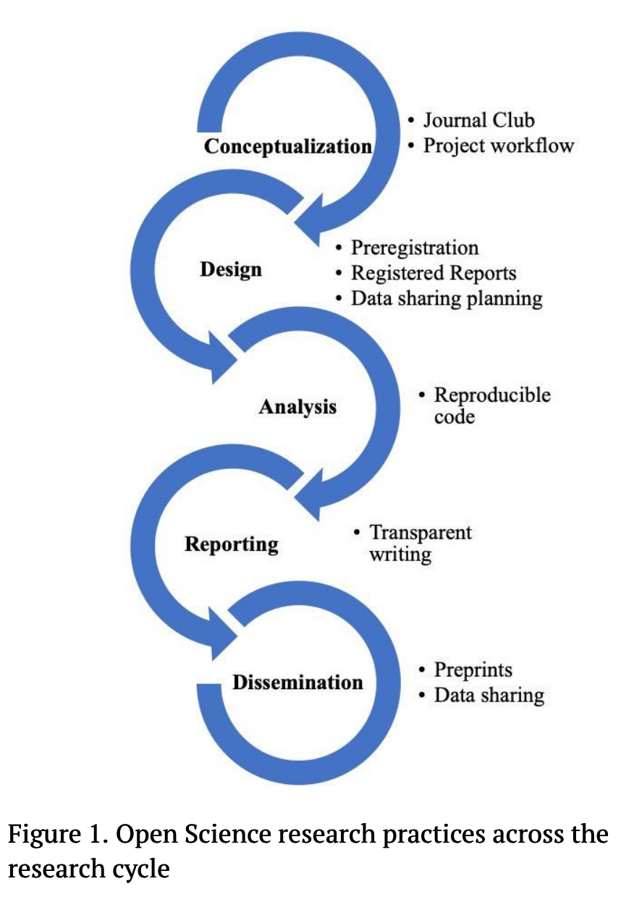
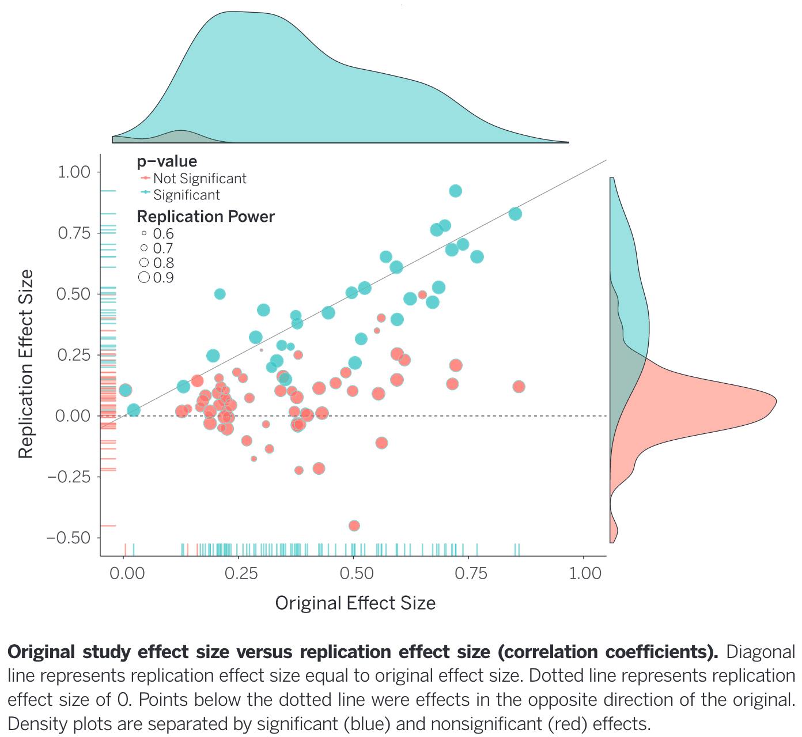
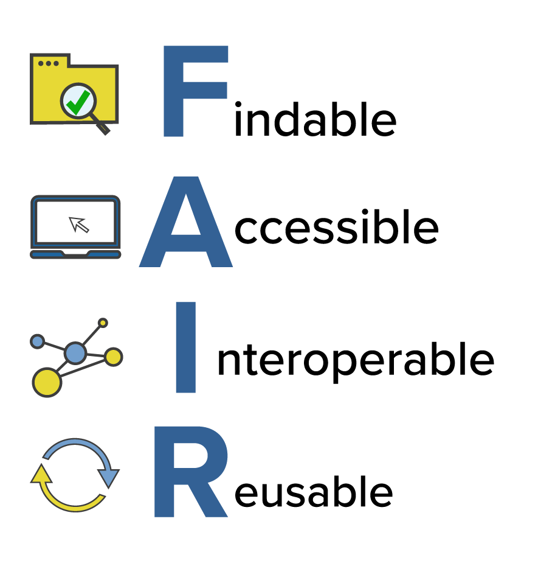
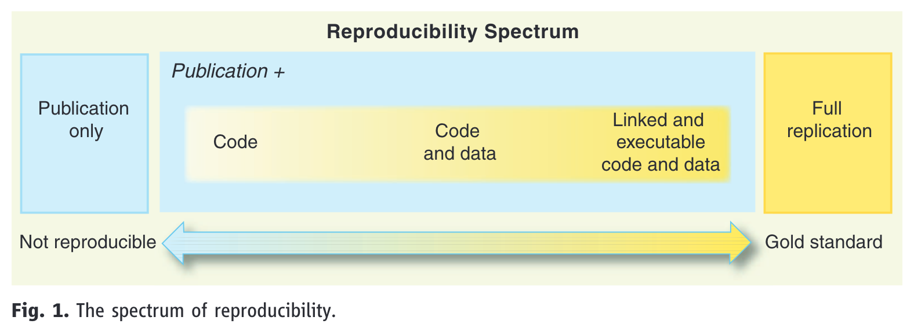
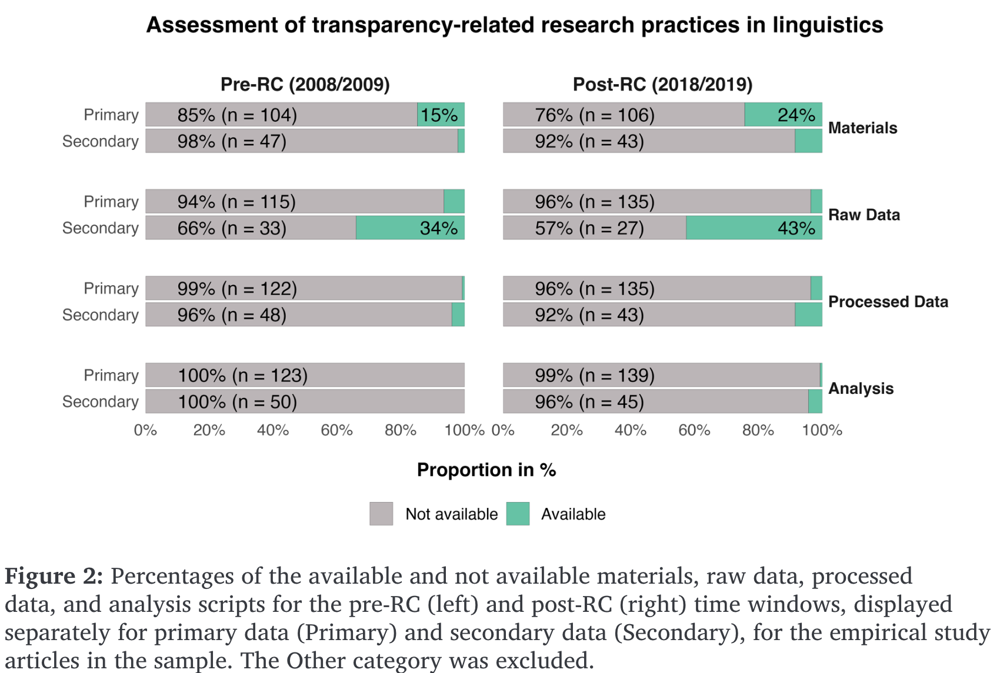

Reproducible analyses in R
What, Why, and How?
Topics
- Open Science Practices
- Reproducibility: What it is and why/how to practice it
- Concepts for building a reproducible workflow
1 What is Open Science?
“Open science” is an umbrella term used to refer to the concepts of openness, transparency, rigor, reproducibility, replicability, and accumulation of knowledge, which are considered fundamental features of science”
— Crüwell et al. (2019), p.3
- a movement developed to respond to crisis in scientific research
- lack of accessibility, transparency, reproducibility, and replicability of previous research
- transparency is key to all facets of Open Science
- it allows for full evaluation of all stages of science
- Open Access, software, data, code, materials…
1.1 Systemic problem in science
- the combination of
- publication bias
- journals favour novel, significant findings
- publish or perish
- researchers’ careers depend on publications
- publication bias
- can/does/did lead to:
- HARKing
- Hypothesising After Results are Known
- p-hacking
- (re-)running analyses until a significant effect is found
- replication crisis
- pervasive failure to replicate previous research
- HARKing
1.2 How to practice Open Science
Figure 1 shows some suggestions from Kathawalla et al. (2021)
Open Science is not all-or-nothing
there are things I consider the bare minimum
- detailed experiment plan, ideally public
- openly available materials (e.g., stimuli)
- share code and data
the important thing is to do what you can
Which Open Science research practices in Figure 1 do you already practice? Are there any you’d like to start implementing?
The replication crisis
The replication crisis refers to the failure of many replication studies to replicate the findings of influential studies. The result of this “crisis” is a move towards Open Science Practices, which emphasise transparency along all stages of research (conception, planning, data collection, data cleaning, data analysis, reporting).
The issue became more widespread with the publication of Ioannidis (2005), entitled Most published research findigns are false. This paper defined bias in terms of design, analysis, and presentation factors with a focus on issues with p-values and statistical power. Since then there have been many replication attempts of influential (and lesser influential) papers. Strikingly, Open Science Collaboration (2015) reports 100 psychological studies run by 270 collaborators. They reported significant effects in only 36% of replications, with 47% of originally reported effects falling within 95% CIs of the replication effect. In essence: fewer significant findings and smaller effect sizes were found in replication studies compared to the original 100 studies Figure 2.

2 Reproducibility
2.1 What is reproducibility?
- one piece of the Open Science pie
- generating the same results with the same data and analysis scripts
- seems obvious, but requires organisation and forethought before and during data collection/analysis
- bare minimum: share the code and the data (Laurinavichyute et al., 2022)
Reproducibility vs. replication
- the two terms have been used interchangably in the past (e.g., in the title of Open Science Collaboration, 2015)
- we’ll define them as follows (and this is becoming the standard distinction, imo)
Reproducibility
- re-analysing the same data using (ideally) the same scripts, software…
- aim: produce the same results (means, model estimates, etc.)
- why: tests for errors, coding mistakes, biases, etc.
Replication
- re-running a previous experiment, ideally with the same materials, set-up…
- ideally the same analysis workflow as the original study (i.e., like reproducing the analyses but with new data)
- aim: test whether results are replicated with new data in terms of direction and magnitude
- in short:
- reproducibility = re-analysis of the same data
- replication = collection of new data
2.2 Why implement reproducibility in my workflow?
- firstly: the help future you (or collaborators/other researchers)!
- you may return to your analyses tomorrow, next month, or next year
- to ensure robustness and to document your steps
- ‘researcher degrees of freedom’ and the ‘garden of forking paths’: there’s more than one way to analyse a certain dataset
- we can try to plan ahead in detail (e.g., pre-reigster your analysis plan), but there will always be decisions made that were not foreseen
- lastly: it makes your life much easier and streamlines your workflow
2.3 How to implement reproducibility?
- not exactly straightforward
- there are degrees of reproducibility
- the rest of our time will be spent on this topic
- sharing code and data is a first step
- think of the FAIR principles of data sharing
- apply them to sharing analyses as well
Practice FAIR principles
- guidelines for sharing digital resources
- refers broadly to (meta)data, let’s extend them to analysis code

- findable and accessible: where materials are stored
- in findable repositories
- that are accessible, i.e., do not require an account
- interoperable and reusable: format of data (and code)
- the importance of future use
- and use beyond your precise computational environment
Conduct a code review
- a great way to test the FAIR principles
- code review!
- i.e., have a colleague try to access your data/run your code
- either via an online repository
- or send them your project folder
The reproducibility spectrum
- reproducibility is on a continuum, referred to as the reproducibility spectrum in Peng (2011) (Figure 4)
- linked means “all data, metadata, and code [is] stored and linked with each other and with corresponding publications” (Peng, 2011, p. 1227)
- executable is not explained, and is more difficult to guarantee long-term as it depends on software versions
- but at minimum we can assume it refers to code running on someone else’s machine

Data and code \(\neq\) Reproducibility
access to data and code does not mean analyses are reproducible
what can go wrong? Examples from Laurinavichyute et al. (2022)
- Data problems
- inaccessible data
- incomplete data (e.g., 2/3 experiments)
- Code problems
- incomplete code
- error messages
- code rot: outdated syntax or environment
- proprietary software
- Documentation problems
- data difficult to interpret
- no README file/data dictionary
- unclear folder/file/variable naming convention
- manuscript contradicts code
- Unclear terms of use
- no licence specification
2.4 Reproducibility rates of published works
- rates of reproducibility vary across fields (see Bochynska et al., 2023 for a review)
- open access: 25-65%
- data and analyses sharing: 11-33%
- pre-registrations: 0-3%
Reproducibility rates in linguistic research

- meta-analysis of 519 randomly sampled articles from various linguistic journales
- pre- and post-reproducibility crisis (2008/9, 2018/19) (Bochynska et al., 2023)
- differentiated between primary (collected for study) and secondary (pre-existing) data
- reported a post-RC increase in shared materials, data, and analyses
- but still low rates of each
- higher rates of secondary data sharing, presumably due to publicly available corpora
- data shared more often than analyses, pre- and post-RC
Journal of Memory and Language
- meta-analysis of articles from JML (Laurinavichyute et al., 2022)
- before and after an Open Science Policy was introduced in 2019
- code and data availability improved
- but reproducibility rate ranged from 34-56%, depending on criteria
- higher rates compared to field-wide meta-analysis (Bochynska et al., 2023)
3 Reproducible Practices
3.1 Beyond the reproducibility spectrum
- there are different levels of reproducibility
- the bare minimum is sharing the code and data
- and including session information:
- which operating system was used
- which software/package versions were used
- going bigger:
- project-oriented workflow
- project-specific filepaths
- contained in a single project folder
- we will be using RProjects to achieve this
3.2 Project management
- folder structure
- project-relative file paths
- appropriate documentation
- e.g., README files
- it’s great to map out your project structure early on
- but it will grow as you go along
- reproducible principles facilitate adapting as it grows
3.3 Naming conventions
- there are some “rules” for naming files, folders, and variables
- Avoid special characters
- ensures machine readability
- Make names concise but meaningful
- ensures human-readability
- Avoid spaces
- try
CamelCase, snake case (snake_case), or skewer case (skewer-case) - or use hyphens (
-) to separate chunks, and underscores (_) to connect words of the same chunk
- try
- Consider default ordering
- e.g., with dates (ISO 8601):
YYYY-MM-DD - with folders or files: numerical prefixes (e.g.,
01-data_cleaning.R,02-data_visualisation.R)
- e.g., with dates (ISO 8601):
- Be consistent
- as long as your names are machine and human readable
Tidy data
Tidy datasets are all alike but every messy dataset is messy in its own way
— Wickham (2014)
- Tidy data
3.4 Literate programming
Instead of imagining that our main task is to instruct a computer what to do, let us concentrate rather on explaining to human beings what we want a computer to do.
— Knuth (1984), p. 97
- originally used to refer to writing programs
- but also applies to analysis code
- especially if we’re aiming for reproducibility
main concepts:
- code is linear (this pre-dates Knuth, 1984)
- informative but concise commenting
main benefits:
- facilitates maintenance
- helpful for future-you, collaborators, etc.
3.5 Version control (not covered in this workshop)
- git: local tracking
- useful for the analysis and writing phases
- but can be tricky for collaboration
- GitHub/GitLab: remote tracking
- store your changes to your local git repository
- then push them to your remote repository
- safe guards against local hardware/software issues
- lost or damaged computer or local files
- and allows for collaboration or sharing
3.6 Writing (not covered in this workshop)
dynamic reports with Markdown syntax
- e.g., Rmarkdown, Quarto
- integration of data, code, and prose
- facilitates cross-referencing within document
- integration of citation management tools
- supports LaTeX syntax for example sentences and tables
papajapackage for APA-formatted Rmarkdown documentschallenge: collaboration
- not all collaborators know these tools
- track changes not currently possible
4 Data management and sharing
4.1 Data Management (and Sharing) Plans (DM(S)P)
- research data management is relevant for all stages of the data life cycle
- planning, collection, processing, archiving, publishing
- DMSPs are required by some funding bodies
- even if not, they’re an important part of project planning
- questions to consider:
- do I have data from human participants?
- do I have data from vulnerable groups (children, patients, etc.)
- have I collected any identifiable data from humans? (direct or indirect)
Facilitating data management/sharing
- planning and implementing folder structure, file and variable names
- keep everything relevant to a certain project in one place (i.e., folder)
- use subfolders appropriately
- avoid mixing subfolders and files within a single folder
4.2 Documentation
metadata
- project README
- codebook/data dictionary
README should contain
- a project description
- relevant links
- description of folder structure
can be updated as the project develops
README.md files in GitHub/Lab are automatically used as a project description
.mdis a plain text document- uses markdown syntax
REAMD files don’t need to be markdown files, but
4.3 Version control (again)
- version control is an important aspect of data management
- can be done with git, or manually
- manual version control ()
4.4 Persistant (public) storage
- GitHub/Lab are sub-optimal
- developer-focused
- typically lack thorough documentation/metadata
- not very user-friendly for non-users
- OSF, Zenodo
- Open Science-focused
- can be linked to a GitHub/Lab repository
- facilitate thorough documentation
- user-friendly
ZAS Data Protocol
From the Employee Handbook (p. 37-8):
All data must always be stored on your personal OneDrive or a SharePoint drive of the relevant project.
Make sure this is the case!! This however does not make the data public, which usually happens after publication of a relevant manuscript.
5 Steps we’ll take
- Open source software:
- R, an open source statistical programming language
- in RStudio, an IDE (integrated developer environment)
- with R Projects
- Project-oriented workflow:
- establish folder structure
- and file/variable naming conventions
- use project-relative filepaths with the
herepackage - establish and maintain project-relative package library with
renv(time permitting)
- Practice literate programming:
- writing clean, commented, linear code
- in dynamic reports (e.g., Quarto, R markdown)
- practice modularity, i.e., 1 script = 1 purpose
- Sharing and checking our code
- uploading our code and data to an OSF repository
- conducting a code review
Topics 🏁
- Open Science Practices ✅
- Reproducibility: What it is and why/how to practice it ✅
- Concepts for building a reproducible workflow ✅
References
Bochynska, A., Keeble, L., Halfacre, C., Casillas, J. V., Champagne, I.-A., Chen, K., Röthlisberger, M., Buchanan, E. M., & Roettger, T. B. (2023). Reproducible research practices and transparency across linguistics. Glossa Psycholinguistics, 2(1). https://doi.org/10.5070/G6011239
Bowers, J., & Voors, M. (2016). How to improve your relationship with your future self. Revista de Ciencia Política (Santiago), 36(3), 829–848. https://doi.org/10.4067/S0718-090X2016000300011
Corker, K. S. (2022). An Open Science Workflow for More Credible, Rigorous Research. In M. J. Prinstein (Ed.), The Portable Mentor (3rd ed., pp. 197–216). Cambridge University Press. https://doi.org/10.1017/9781108903264.012
Crüwell, S., Van Doorn, J., Etz, A., Makel, M. C., Moshontz, H., Niebaum, J. C., Orben, A., Parsons, S., & Schulte-Mecklenbeck, M. (2019). Seven Easy Steps to Open Science: An Annotated Reading List. Zeitschrift Für Psychologie, 227(4), 237–248. https://doi.org/10.1027/2151-2604/a000387
Ioannidis, J. P. A. (2005). Why most published research findings are false. PLoS Med, 2(8), 2–8. https://doi.org/10.1371/journal.pmed.0020124
Kathawalla, U.-K., Silverstein, P., & Syed, M. (2021). Easing Into Open Science: A Guide for Graduate Students and Their Advisors. Collabra: Psychology, 7(1), 18684. https://doi.org/10.1525/collabra.18684
Knuth, D. (1984). Literate programming. The Computer Journal, 27(2), 97–111.
Nagler, J. (1995). Coding Style and Good Computing Practices. PS: Political Science & Politics, 28(3), 488–492. https://doi.org/10.2307/420315
Open Science Collaboration. (2015). Estimating the reproducibility of psychological science. Science, 349(6251), aac4716. https://doi.org/10.1126/science.aac4716
Peng, R. D. (2011). Reproducible Research in Computational Science. Science, 334(6060), 1226–1227. https://doi.org/10.1126/science.1213847
Wickham, H. (2014). Tidy Data. Journal of Statistical Software, 59(10).
Wilson, G., Bryan, J., Cranston, K., Kitzes, J., Nederbragt, L., & Teal, T. K. (2017). Good enough practices in scientific computing. PLOS Computational Biology, 13(6), e1005510. https://doi.org/10.1371/journal.pcbi.1005510